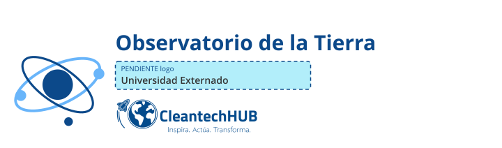
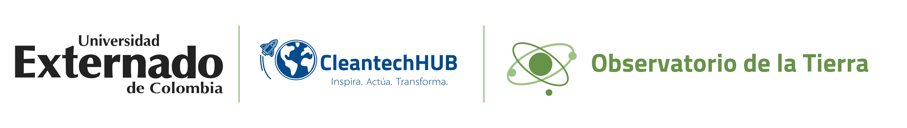
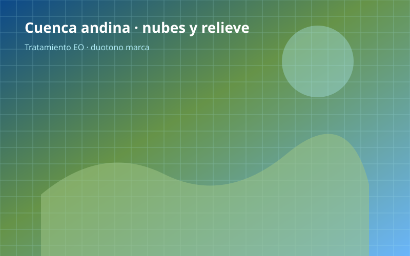
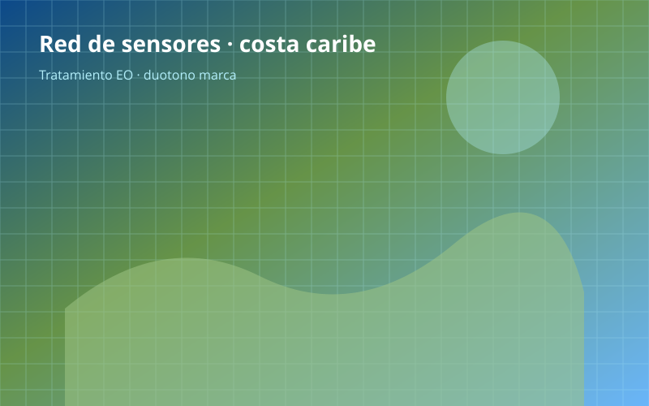
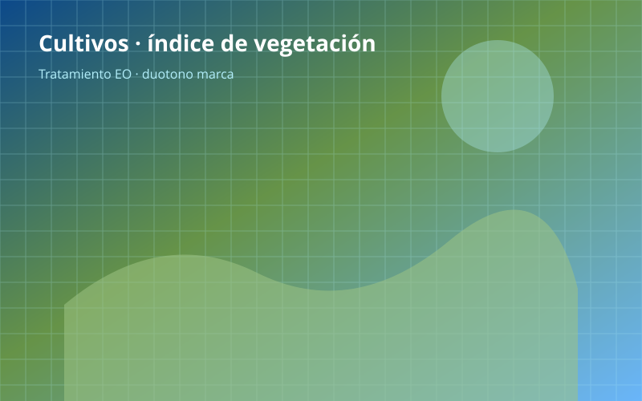
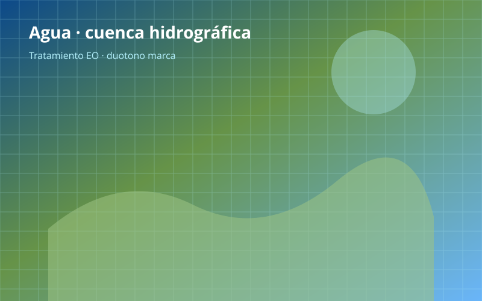
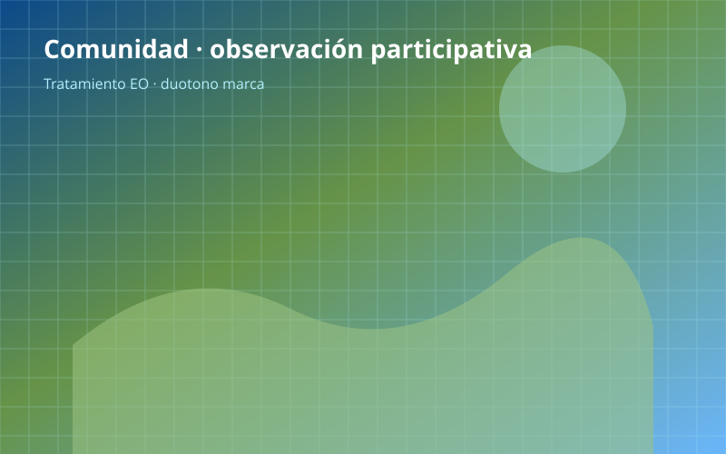

Manual de marca
Observatorio de la Tierra · Earth Observatory
Observatorio de la Tierra · Earth Observatory
El Observatorio de la Tierra es la plataforma de cooperación que une observación terrestre, datos abiertos y emprendimiento climático en Colombia.
Earth Observatory connects territory, Earth observation data, and climate entrepreneurship through the Datalab and open sandboxes.
Usar lockups aprobados en final/es y co-brand en final/cobrand. No reconstruir tipografías ni alterar el escudo de Externado.

Orden: Externado (escudo intacto) + CleantechHUB + Observatorio de la Tierra. Respetar área de protección = altura del bloque Externado.
Azul sobre fondos claros; verde en piezas de campo; reverso sobre #0C498A o fotografía oscura.


Pantalla: ancho mínimo 120 px del lockup completo. Impresión: 25 mm. Por debajo, usar isotipo Externado + texto plano.
| Nombre | HEX | Uso |
|---|---|---|
| Arena | #D4C4A8 | Fondo principal · bloques amplios |
| Arcilla | #A67C52 | Bandas hero · banners |
| Oliva | #6B7B4C | Acento · reglas · pills |
| Azul profundo | #0C498A | Texto · bloque inferior · co-brand azul |
Dirección 3 · Tierra natural. Bloques sólidos; sin gradientes a sangre. Co-brand en final/cobrand/.
Texto sobre arena/arcilla: #0C498A. Sobre oliva o azul: blanco o #D4C4A8 (AA). Evitar gradientes; usar bloques rectos superpuestos.
Series de datos: azul profundo, oliva, arcilla, arena. Máximo cuatro tonos por gráfico. Evitar rojo/ámbar salvo alertas UI.
Open Sans 400/600/700/800 — cuerpo, etiquetas y UI. Lora 600/700 — titulares display y citas.
Titular H1 · Lora 28–32 pt
Cuerpo 11–16 pt · Open Sans · interlineado 1.45
Etiquetas · Open Sans 10–14 pt
Stack: 'Open Sans', 'Lora', system-ui, sans-serif. Cargar Open Sans 400–800 y Lora 600–700 desde Google Fonts.
Territorio colombiano, sensores, cooperación internacional, equipos en laboratorio (ilustración). Tratamiento duotono o overlay en gama EO.





Sin marcas de agua; sin personas reales sin fuente.
Superponer rectángulos sólidos (arena, oliva arriba-derecha, azul abajo-izquierda, banda arcilla). Sin gradientes ni grillas a sangre.
Iconos lineales 2 px, esquinas suaves. Gráficos: ejes discretos, etiquetas Open Sans, máximo cinco series.
HTML en templates/social/ con zonas seguras. Export PNG por tamaño (ver hoja de contacto).
Primera aplicación: applications/agenda-24nov-eo.html — co-brand reverso en pie, sin placeholder Air4U, speaker confirmado Enrique Medina (Agrometers).
CleantechHUB Foundation · Universidad Externado de Colombia